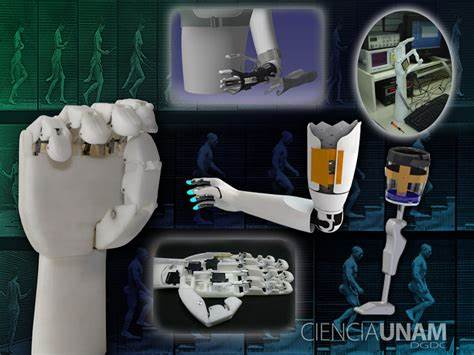

Explora los límites de la Medicina
La evolución de las prótesis ha sido impulsada por avances tecnológicos que están cambiando radicalmente la forma en que las personas con amputaciones o limitaciones físicas interactúan con el mundo. Desde la integración de sensores avanzados hasta el uso de inteligencia artificial, estas innovaciones están llevando las prótesis a un nivel sin precedentes de funcionalidad y personalización.
La impresión 3D ha revolucionado la creación de prótesis al hacer posible la fabricación rápida y económica de dispositivos personalizados. Permite adaptar prótesis a las medidas exactas del usuario, mejorando la comodidad y funcionalidad. Ejemplo: Prótesis para niños, que necesitan reemplazos frecuentes debido al crecimiento.
Uso de materiales como fibra de carbono, silicona avanzada y polímeros biocompatibles que combinan ligereza, durabilidad y comodidad. Desarrollo de materiales autorreparables que prolongan la vida útil de las prótesis. Integración de materiales inteligentes que pueden responder a estímulos externos, como cambios de temperatura o presión.
Incorporación de sensores avanzados que detectan presión, textura y temperatura. Prótesis con retroalimentación háptica, que permite al usuario sentir lo que toca, aumentando el control y la conexión con el dispositivo. Ejemplo: Prótesis de manos biónicas capaces de diferenciar entre sujetar un huevo o un objeto pesado.
Desarrollo de sistemas que conectan directamente las prótesis con el cerebro, permitiendo un control más intuitivo mediante señales neuronales. Estas interfaces mejoran la precisión de los movimientos y permiten acciones más complejas. Ejemplo: Prótesis controladas por pensamientos en pruebas clínicas, lo que representa un gran avance en neurotecnología.
Uso de algoritmos de inteligencia artificial para que las prótesis aprendan y se adapten a los patrones de movimiento del usuario. Prótesis capaces de predecir intenciones basadas en datos en tiempo real, haciendo que los movimientos sean más naturales y fluidos. Ejemplo: Prótesis que ajustan automáticamente su posición según el terreno, como al subir escaleras o caminar en superficies irregulares.
Incorporación de tecnologías que permiten la autoalimentación de las prótesis, como sistemas que convierten el movimiento del usuario en energía. Baterías más pequeñas, duraderas y recargables que prolongan la autonomía de las prótesis electrónicas.
Prótesis inteligentes conectadas a plataformas digitales para monitorear el rendimiento y realizar ajustes de forma remota. Estas conexiones permiten diagnósticos y mantenimiento predictivo, evitando fallos inesperados.
Investigaciones en bioimpresión 3D de tejidos vivos para crear prótesis híbridas que combinen componentes mecánicos y biológicos. Ejemplo: Desarrollo de riñones y corazones bioartificiales que replican la función de los órganos reales.
Uso de realidad aumentada y virtual para entrenar a los usuarios en el manejo de sus prótesis. Estas tecnologías también ayudan en la rehabilitación, mejorando la coordinación y el control motor.
Prótesis con diseño modular que permiten al usuario intercambiar partes según sus necesidades específicas (deporte, trabajo, actividades cotidianas). Ejemplo: Un brazo que puede cambiar entre una mano robótica y herramientas especializadas.
